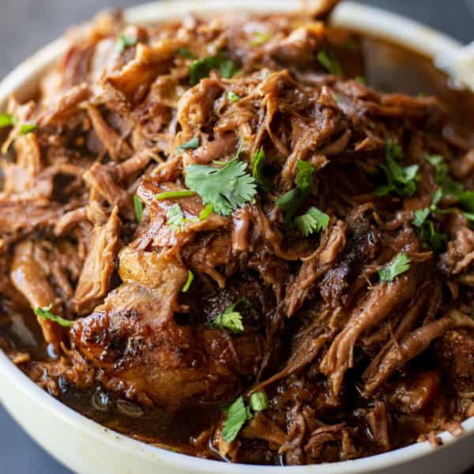

Sweet Hawaiian Crock Pot Pulled Pork

Description
Sweet Hawaiian Crock Pot Pulled Pork is the perfect way to feed a crowd. Coated in a homemade spice rub, then simmered in an finger-licking savory, sweet and spicy Hawaiian inspired sauce until tender. This slow cooker pulled pork is sweet, tender, delicious and incredibly easy to make.
Ingredients
- Pork shoulder/butt
- Olive oil
- Sesame seed oil
- Ginger powder
- Garlic powder
- Onion powder
- Smoked paprika and cayenne
- Salt and pepper
- Unsweetened coconut milk
- Soy sauce
- Rice wine vinegar
- Dry sherry
- Sweet Asian chili sauce
- Fish sauce
- Sriracha
- Cornstarch
- Brown sugar
Directions
- Start by spraying the inside of a large slow cooker vessel with non-stick spray.
- Whisk together the ingredients for the spice rub. Remove your pork butt from its packaging, trim away any excess fat, rinse and pat dry with paper towels.
- Using your hands, coat entire pork butt with the wet spice rub.
- Heat olive oil in a large skillet over High heat. Using tongs, sear pork on all sides until lightly browned, about 2-3 minutes each side. Move pork to the slow cooker.
- In a large bowl, combine the ingredients for the Hawaiian sauce. Pour over the pork in the slow cooker.
- Set your slow cooker to Low for 8-10 hours or High for 5-6 hours.
- Once cooked, your slow cooker pulled pork should be fall apart tender and easily shred with a fork.
- Remove the pork from the slow cooker to a cutting board and shred.
- Carefully (it’s HOT!!) pour the sauce from the slow cooker into a large vessel and then once the slow cooker is empty, return your pulled pork to it.
- Add brown sugar and two cups of the reserved slow cooker sauce to a large skillet and whisk / simmer over medium high heat for 5 minutes.
- Pour sauce over shredded pork and toss until evenly coated.
- Serve immediately.